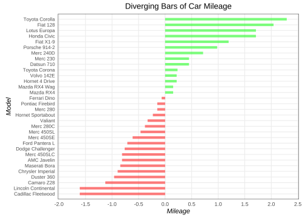

Code
library(data.table)
df <- datasets::mtcars %>% data.table() %>% .[,cars:=rownames(mtcars)]
df[,mpg_z:=scale(mpg)]
df[mpg_z>0,mpg_c:="g"]
df[mpg_z<0,mpg_c:="r"]Diverging Bars
library(data.table)
df <- datasets::mtcars %>% data.table() %>% .[,cars:=rownames(mtcars)]
df[,mpg_z:=scale(mpg)]
df[mpg_z>0,mpg_c:="g"]
df[mpg_z<0,mpg_c:="r"]ggplot(df,aes(y=reorder(cars,mpg_z),colour = mpg_c))+
geom_linerange(aes(xmin = 0,
xmax = mpg_z),
linewidth=2,alpha=.5,show.legend = F)+
scale_color_manual(values = c("r"="red","g"="green"))+
scale_x_continuous(limits = c(-2,2.5),breaks = seq(-2,2.5,0.5),expand = c(0,0.02))+
scale_y_discrete(expand = c(0.03,0.03))+
labs(x="Mileage",y="Model",title = "Diverging Bars of Car Mileage")+
theme_bw()+
theme(
aspect.ratio = 1/1.3,
axis.ticks = element_blank(),
axis.title = element_text(face = "italic"),
axis.text.y = element_text(size = 8),
panel.grid.minor = element_blank(),
plot.title = element_text(hjust = .5)
)+
geom_text(
data = df[mpg_c=="g"],
mapping = aes(x=mpg_z,label = sprintf("%.2f",mpg_z)),hjust = 0,colour = "green4",size = 2
)+
geom_text(
data = df[mpg_c=="r"],
mapping = aes(x=mpg_z,label = sprintf("%.2f",mpg_z)),hjust = 1,colour = "red4",size = 2
)
ggplot(df)+
geom_segment(aes(x = 0,xend = mpg_z,
y=reorder(cars,mpg_z),yend =reorder(cars,mpg_z),
colour=mpg_c),
linewidth=2,alpha=.5,show.legend = F)+
scale_color_manual(values = c("r"="red","g"="green"))+
scale_x_continuous(limits = c(-2,2.5),breaks = seq(-2,2.5,0.5),expand = c(0,0.02))+
scale_y_discrete(expand = c(0.03,0.03))+
labs(x="Mileage",y="Model",title = "Diverging Bars of Car Mileage")+
theme_bw()+
theme(
aspect.ratio = 1/1.3,
axis.ticks = element_blank(),
axis.title = element_text(face = "italic"),
axis.text.y = element_text(size = 8),
panel.grid.minor = element_blank(),
plot.title = element_text(hjust = .5)
)
ggplot(df,aes(x=reorder(cars,mpg_z),y=mpg_z,fill = mpg_c))+
geom_bar(stat = "identity",
width=0.5,alpha=.5,show.legend = F)+
scale_fill_manual(values = c("r"="red","g"="green"))+
scale_y_continuous(limits = c(-2,2.5),breaks = seq(-2,2.5,0.5),expand = c(0,0.02))+
scale_x_discrete(expand = c(0.03,0.03))+
labs(x="Mileage",y="Model",title = "Diverging Bars of Car Mileage")+
theme_bw()+
theme(
aspect.ratio = 1/1.3,
axis.ticks = element_blank(),
axis.title = element_text(face = "italic"),
axis.text.y = element_text(size = 8),
panel.grid.minor = element_blank(),
plot.title = element_text(hjust = .5)
)+
coord_flip()